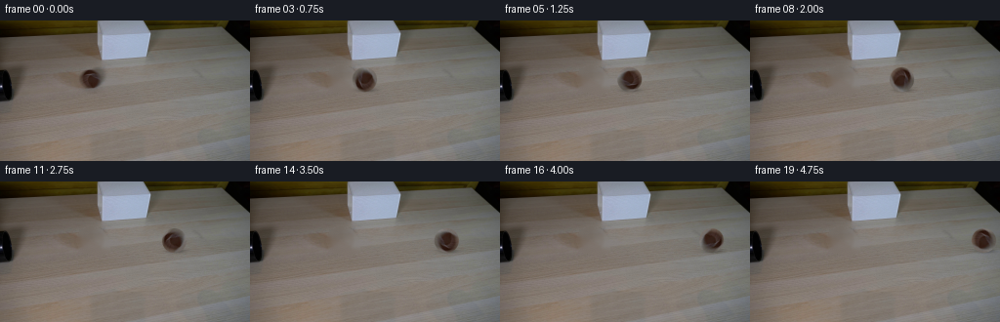
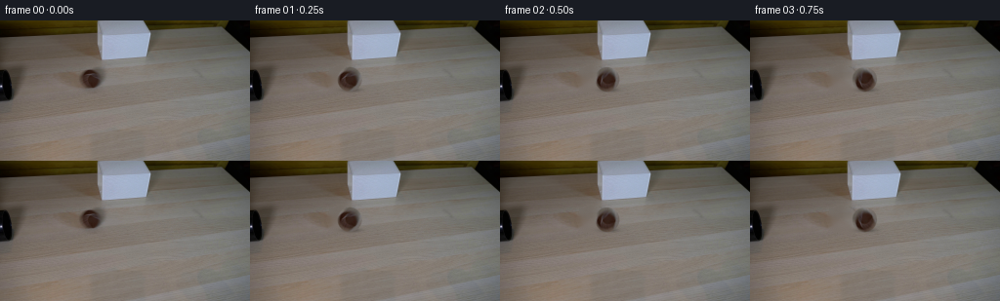

CODING AGENTS AS PIXEL WORLD MODELS
traex/GPT-5.6-Sol · 0148
点击播放 · 原生 RGB 像素
逐轮保存的候选
回放视频、检查图与代码变化。
每份候选均可单独播放。实际图片检查记录在下方工具轨迹中。
候选 01播放与检查图
点击播放 · 原生 RGB 像素


展开代码变化
--- 上一保存版本
+++ 本次保存版本
@@ -0,0 +1,118 @@
+from pathlib import Path
+import math
+import cv2
+import numpy as np
+from PIL import Image
+import artifact_io
+
+# PixelWorld case 0148: locked-off tabletop experiment.
+# Everything is derived from the one permitted photographed frame.
+CASE_DIR = Path(__file__).resolve().parent
+W, H = 256, 144
+N = 20
+
+
+def soft_disc_grid(cx, cy, radius, feather=1.0):
+ yy, xx = np.mgrid[0:H, 0:W].astype(np.float32)
+ d = np.sqrt((xx-cx)**2 + (yy-cy)**2)
+ return np.clip((radius + feather - d) / (2.0*feather), 0.0, 1.0)
+
+
+def make_clean_plate(src):
+ """Remove the photographed ball while retaining the fine tabletop grain."""
+ # The core is inpainted from its immediate wooden surroundings. A second,
+ # very soft pass removes the original contact shadow without affecting the
+ # neighboring tube or lamp.
+ mask = np.zeros((H, W), np.uint8)
+ cv2.ellipse(mask, (94, 60), (15, 13), 0, 0, 360, 255, -1, cv2.LINE_AA)
+ cv2.ellipse(mask, (96, 68), (15, 5), 0, 0, 360, 255, -1, cv2.LINE_AA)
+ plate = cv2.inpaint(src, (mask > 10).astype(np.uint8)*255, 5.0, cv2.INPAINT_TELEA)
+
+ # Inpainting at this tiny resolution can become over-smooth. Restore
+ # deterministic real grain from adjacent same-height wood, corrected for
+ # the local illumination gradient and feathered only through the hole.
+ donor = np.roll(src, 31, axis=1) # destination x gets original x-31
+ # Match donor color to plate around the repair region, row by row.
+ donor_f = donor.astype(np.float32)
+ plate_f = plate.astype(np.float32)
+ for y in range(46, 76):
+ target = plate_f[y, 76:113].mean(axis=0)
+ source = donor_f[y, 76:113].mean(axis=0)
+ donor_f[y] += (target-source) * 0.45
+ donor_f = np.clip(donor_f, 0, 255)
+ yy, xx = np.mgrid[0:H, 0:W]
+ # Interior only: keep Telea's geometrically plausible boundary values.
+ grain_w = np.clip((12.0 - np.sqrt(((xx-94)/1.12)**2 + ((yy-60)/0.96)**2))/3.0, 0, 1)
+ grain_w *= 0.24
+ plate_f = plate_f*(1-grain_w[...,None]) + donor_f*grain_w[...,None]
+ return np.clip(plate_f, 0, 255).astype(np.uint8)
+
+
+def sample_rotated_ball(src, center_x, angle):
+ """Rotate the original tennis-ball pixels around its photographed center."""
+ cx0, cy0 = 94.0, 60.0
+ yy, xx = np.mgrid[0:H, 0:W].astype(np.float32)
+ # Coordinates relative to the new center, inverse rotated into frame zero.
+ dx = xx-center_x
+ dy = yy-cy0
+ ca, sa = math.cos(angle), math.sin(angle)
+ sx = ca*dx + sa*dy + cx0
+ sy = -sa*dx + ca*dy + cy0
+ sampled = cv2.remap(src, sx, sy, cv2.INTER_CUBIC,
+ borderMode=cv2.BORDER_REFLECT_101)
+ # The edge in the photo is nearly circular. Feather one pixel for good
+ # subpixel motion while keeping the original fuzzy edge texture.
+ dist = np.sqrt(dx*dx + dy*dy)
+ alpha = np.clip((13.15-dist)/1.15, 0.0, 1.0)
+ return sampled.astype(np.float32), alpha
+
+
+def render_frame(src, plate, index):
+ if index == 0:
+ return src.copy() # strict contract: pixel-identical
+
+ # 145 px in 4.75 seconds: steady real-time roll from tube toward far right.
+ # A tiny subpixel component avoids mechanically quantized motion at 4 fps.
+ travel = 145.0 * index/(N-1)
+ cx = 94.0 + travel
+ cy = 60.0
+ out = plate.astype(np.float32)
+
+ yy, xx = np.mgrid[0:H, 0:W].astype(np.float32)
+ # Soft contact shadow, locked to the table rather than rotating with ball.
+ # The slight rightward offset agrees with the illumination in frame zero.
+ ex = (xx-(cx+1.7))/13.2
+ ey = (yy-(cy+10.8))/3.0
+ shadow = np.exp(-2.2*(ex*ex+ey*ey)) * 0.34
+ # Occlusion keeps shadow primarily beneath the sphere/contact point.
+ out *= (1.0-shadow[...,None])
+
+ # No-slip rolling: angle = distance/radius. Negative is clockwise for a
+ # ball moving toward screen-right.
+ radius = 12.1
+ angle = -travel/radius
+ ball, alpha = sample_rotated_ball(src, cx, angle)
+
+ # Preserve directional illumination despite rotating texture: a restrained
+ # stationary highlight/shade field makes the object read as a round sphere.
+ nx = (xx-cx)/12.5
+ ny = (yy-cy)/12.5
+ light = 1.0 + 0.055*(-0.55*nx-0.83*ny) - 0.022*(nx*nx+ny*ny)
+ ball *= light[...,None]
+ ball = np.clip(ball, 0, 255)
+ out = out*(1.0-alpha[...,None]) + ball*alpha[...,None]
+ return np.clip(np.rint(out), 0, 255).astype(np.uint8)
+
+
+def main():
+ src = np.asarray(Image.open(CASE_DIR/'first_frame.png').convert('RGB'), dtype=np.uint8)
+ if src.shape != (H, W, 3):
+ raise ValueError(f'expected {(H,W,3)}, got {src.shape}')
+ plate = make_clean_plate(src)
+ frames = np.stack([render_frame(src, plate, i) for i in range(N)], axis=0)
+ # Required RGB uint8 artifact writer.
+ artifact_io.save(frames, CASE_DIR)
+
+
+if __name__ == '__main__':
+ main()
可观测工具轨迹
实际执行的命令与返回图片。
命令 1exit 0
/bin/bash -lc "cat prompt.txt && printf '\\n--- GENERATION RULES ---\\n' && cat GENERATION_RULES.md"
命令 2exit 1
/bin/bash -lc "find . -maxdepth 2 -type f -printf '%p\\n' | sort && printf '\\n--- tools ---\\n' && command -v ffmpeg && command -v python3 && python3 - <<'PY'
try:
import PIL; print('PIL', PIL.__version__)
except Exception as e: print('no PIL', e)
try:
import cv2; print('cv2', cv2.__version__)
except Exception as e: print('no cv2', e)
try:
import numpy as np; print('numpy', np.__version__)
except Exception as e: print('no numpy', e)
PY"命令 3exit 0
/bin/bash -lc "python3 - <<'PY'
from PIL import Image
im=Image.open('first_frame.png').convert('RGB')
print('size',im.size,'mode',im.mode)
import numpy as np
x=np.asarray(im)
print('range',x.min(),x.max(),'mean',x.mean(axis=(0,1)).round(2),'std',x.std(axis=(0,1)).round(2))
PY"命令 4exit 0
/bin/bash -lc 'cat artifact_io.py'
命令 5exit 0
/bin/bash -lc "python3 - <<'PY'
from PIL import Image
import numpy as np
im=np.asarray(Image.open('first_frame.png').convert('RGB'))
# Report rows in 8px tiles by luminance and compact dominant hue classes
lum=im.mean(2)
chars=' .:-=+*#%@'
for y in range(0,144,4):
s=''
for x in range(0,256,4):
v=lum[y:y+4,x:x+4].mean()
s+=chars[min(9,int(v/256*10))]
print(f'{y:03d} '+s)
print('\\nDark components thresholds:')
import cv2
for th in [25,35,45,55,65,75,90]:
m=(lum<th).astype('uint8')
n,lab,st,cen=cv2.connectedComponentsWithStats(m,8)
arr=sorted([tuple(map(int,st[i]))+(tuple(np.round(cen[i],1)),) for i in range(1,n) if st[i,4]>=5],key=lambda z:-z[4])[:12]
print(th,arr)
print('\\nBrown candidates R>G*1.05 G>B*1.0 various')
for cond in [((im[:,:,0]>im[:,:,1]*1.1)&(im[:,:,1]>im[:,:,2]*1.05)&(im[:,:,0]>60)),((im[:,:,0]>im[:,:,1]*1.2)&(im[:,:,1]>im[:,:,2]*1.05)&(im[:,:,0]>70))]:
m=cond.astype('uint8'); n,lab,st,cen=cv2.connectedComponentsWithStats(m,8)
print(sorted([tuple(map(int,st[i]))+(tuple(np.round(cen[i],1)),) for i in range(1,n) if st[i,4]>=4],key=lambda z:-z[4])[:15])
PY"命令 6exit 0
/bin/bash -lc "python3 - <<'PY'
from PIL import Image
import numpy as np
from collections import Counter
im=np.asarray(Image.open('first_frame.png').convert('RGB'))
# quantized most common colors
q=(im//8)*8
c=Counter(map(tuple,q.reshape(-1,3)))
for col,n in c.most_common(40): print(col,n)
# row means/medians and ranges every 4 rows
print('ROWS y meanrgb medrgb')
for y in range(0,144,4):
a=im[y:y+4]
print(y, np.round(a.mean((0,1)),1),np.median(a.reshape(-1,3),0).astype(int))
PY"命令 7exit 0
/bin/bash -lc "python3 - <<'PY'
from PIL import Image
import numpy as np
im=np.asarray(Image.open('first_frame.png').convert('RGB'))
# 2x2 block classes in area
for y in range(36,84,2):
s=''
for x in range(0,128,2):
p=im[y:y+2,x:x+2].mean((0,1)); r,g,b=p; lum=p.mean()
if lum<25: c='@'
elif lum<45:c='#'
elif lum<65:c='X'
elif r>g*1.18 and g>b*1.08:c='B' # brown strong
elif r>g*1.08 and g>b*1.03:c='b'
elif max(p)-min(p)<8 and lum>145:c='W'
elif lum<85:c='o'
elif lum<105:c='-'
elif lum<125:c='='
elif lum<145:c='+'
elif lum<170:c='*'
else:c='.'
s+=c
print(f'{y:03d} {s}')
# RGB samples grid x step4/y2 crop
print('\\nSelected horizontal scanlines, runs of quantized 8-bit RGB changing class:')
for y in [45,48,50,52,54,56,58,60,62,64,66,68,70,72,75,78,80,84]:
vals=[]
for x in range(0,130,2):
p=np.median(im[y:y+2,x:x+2].reshape(-1,3),axis=0).astype(int)
vals.append(tuple((p//16)*16))
runs=[]; st=0
for i in range(1,len(vals)+1):
if i==len(vals) or vals[i]"'!=vals[st]:
if i-st>=2:runs.append((st*2,i*2,vals[st]))
st=i
print(y,runs)
PY'命令 8exit 0
/bin/bash -lc "python3 - <<'PY'
from PIL import Image
import numpy as np, cv2
im=np.asarray(Image.open('first_frame.png').convert('RGB'))
g=cv2.cvtColor(im,cv2.COLOR_RGB2GRAY)
e=cv2.Canny(g,30,80)
# ascii edge image 2x2 max
for y in range(0,144,2):
s=''
for x in range(0,256,2):
q=e[y:y+2,x:x+2]
s += '#' if q.max() else ' '
print(s.rstrip())
PY"命令 9exit 0
/bin/bash -lc "python3 - <<'PY'
from PIL import Image
import numpy as np
im=np.asarray(Image.open('first_frame.png').convert('RGB'))
# dump values around presumed ball per pixel grayscale+rgb key stats radial around (93,60)
for y in range(46,75):
s=''
for x in range(75,112):
r,g,b=map(int,im[y,x]); lum=(r+g+b)//3
if lum<35:c='@'
elif lum<55:c='#'
elif lum<75:c='X'
elif r-g>18 and g-b>4:c='B'
elif r-g>8 and g-b>3:c='b'
elif lum<95:c='o'
elif lum<115:c='-'
elif lum<135:c='+'
elif lum<160:c='*'
else:c='.'
s+=c
print(f'{y:03} '+s)
PY"命令 10exit 0
/bin/bash -lc "python3 - <<'PY'
import cv2, numpy as np
from PIL import Image
im=np.asarray(Image.open('first_frame.png').convert('RGB')); g=cv2.cvtColor(im,cv2.COLOR_RGB2GRAY); e=cv2.Canny(g,30,80)
for y in range(0,100):
xs=np.where(e[y]>0)[0]
if len(xs):
# runs
runs=[]; st=xs[0]; p=xs[0]
for q in xs[1:]:
if q>p+1:runs.append((st,p)); st=q
p=q
runs.append((st,p))
print(y, runs)
print('contours')
cs,_=cv2.findContours(e,cv2.RETR_LIST,cv2.CHAIN_APPROX_SIMPLE)
for c in sorted(cs,key=cv2.contourArea,reverse=True)[:30]:
print('area',cv2.contourArea(c),'bbox',cv2.boundingRect(c),'len',len(c))
PY"命令 11exit 0
/bin/bash -lc "cat > generate.py <<'PY'
from pathlib import Path
import math
import cv2
import numpy as np
from PIL import Image
import artifact_io
# PixelWorld case 0148: locked-off tabletop experiment.
# Everything is derived from the one permitted photographed frame.
CASE_DIR = Path(__file__).resolve().parent
W, H = 256, 144
N = 20
def soft_disc_grid(cx, cy, radius, feather=1.0):
yy, xx = np.mgrid[0:H, 0:W].astype(np.float32)
d = np.sqrt((xx-cx)**2 + (yy-cy)**2)
return np.clip((radius + feather - d) / (2.0*feather), 0.0, 1.0)
def make_clean_plate(src):
\"\"\"Remove the photographed ball while retaining the fine tabletop grain.\"\"\"
# The core is inpainted from its immediate wooden surroundings. A second,
# very soft pass removes the original contact shadow without affecting the
# neighboring tube or lamp.
mask = np.zeros((H, W), np.uint8)
cv2.ellipse(mask, (94, 60), (15, 13), 0, 0, 360, 255, -1, cv2.LINE_AA)
cv2.ellipse(mask, (96, 68), (15, 5), 0, 0, 360, 255, -1, cv2.LINE_AA)
plate = cv2.inpaint(src, (mask > 10).astype(np.uint8)*255, 5.0, cv2.INPAINT_TELEA)
# Inpainting at this tiny resolution can become over-smooth. Restore
# deterministic real grain from adjacent same-height wood, corrected for
# the local illumination gradient and feathered only through the hole.
donor = np.roll(src, 31, axis=1) # destination x gets original x-31
# Match donor color to plate around the repair region, row by row.
donor_f = donor.astype(np.float32)
plate_f = plate.astype(np.float32)
for y in range(46, 76):
target = plate_f[y, 76:113].mean(axis=0)
source = donor_f[y, 76:113].mean(axis=0)
donor_f[y] += (target-source) * 0.45
donor_f = np.clip(donor_f, 0, 255)
yy, xx = np.mgrid[0:H, 0:W]
# Interior only: keep Telea's geometrically plausible boundary values.
grain_w = np.clip((12.0 - np.sqrt(((xx-94)/1.12)**2 + ((yy-60)/0.96)**2))/3.0, 0, 1)
grain_w *= 0.24
plate_f = plate_f*(1-grain_w[...,None]) + donor_f*grain_w[...,None]
return np.clip(plate_f, 0, 255).astype(np.uint8)
def sample_rotated_ball(src, center_x, angle):
\"\"\"Rotate the original tennis-ball pixels around its photographed center.\"\"\"
cx0, cy0 = 94.0, 60.0
yy, xx = np.mgrid[0:H, 0:W].astype(np.float32)
# Coordinates relative to the new center, inverse rotated into frame zero.
dx = xx-center_x
dy = yy-cy0
ca, sa = math.cos(angle), math.sin(angle)
sx = ca*dx + sa*dy + cx0
sy = -sa*dx + ca*dy + cy0
sampled = cv2.remap(src, sx, sy, cv2.INTER_CUBIC,
borderMode=cv2.BORDER_REFLECT_101)
# The edge in the photo is nearly circular. Feather one pixel for good
# subpixel motion while keeping the original fuzzy edge texture.
dist = np.sqrt(dx*dx + dy*dy)
alpha = np.clip((13.15-dist)/1.15, 0.0, 1.0)
return sampled.astype(np.float32), alpha
def render_frame(src, plate, index):
if index == 0:
return src.copy() # strict contract: pixel-identical
# 145 px in 4.75 seconds: steady real-time roll from tube toward far right.
# A tiny subpixel component avoids mechanically quantized motion at 4 fps.
travel = 145.0 * index/(N-1)
cx = 94.0 + travel
cy = 60.0
out = plate.astype(np.float32)
yy, xx = np.mgrid[0:H, 0:W].astype(np.float32)
# Soft contact shadow, locked to the table rather than rotating with ball.
# The slight rightward offset agrees with the illumination in frame zero.
ex = (xx-(cx+1.7))/13.2
ey = (yy-(cy+10.8))/3.0
shadow = np.exp(-2.2*(ex*ex+ey*ey)) * 0.34
# Occlusion keeps shadow primarily beneath the sphere/contact point.
out *= (1.0-shadow[...,None])
# No-slip rolling: angle = distance/radius. Negative is clockwise for a
# ball moving toward screen-right.
radius = 12.1
angle = -travel/radius
ball, alpha = sample_rotated_ball(src, cx, angle)
# Preserve directional illumination despite rotating texture: a restrained
# stationary highlight/shade field makes the object read as a round sphere.
nx = (xx-cx)/12.5
ny = (yy-cy)/12.5
light = 1.0 + 0.055*(-0.55*nx-0.83*ny) - 0.022*(nx*nx+ny*ny)
ball *= light[...,None]
ball = np.clip(ball, 0, 255)
out = out*(1.0-alpha[...,None]) + ball*alpha[...,None]
return np.clip(np.rint(out), 0, 255).astype(np.uint8)
def main():
src = np.asarray(Image.open(CASE_DIR/'first_frame.png').convert('RGB'), dtype=np.uint8)
if src.shape "'!= (H, W, 3):
raise ValueError(f'"'expected {(H,W,3)}, got {src.shape}')
plate = make_clean_plate(src)
frames = np.stack([render_frame(src, plate, i) for i in range(N)], axis=0)
# Required RGB uint8 artifact writer.
artifact_io.save(frames, CASE_DIR)
if __name__ == '__main__':
main()
PY
python3 generate.py
python3 - <<'PY'
from pathlib import Path
import numpy as np
from PIL import Image
z=np.load('pixels.npz')['pixels']
frames=np.stack([np.asarray(Image.open(f'frames/{i:02d}.png').convert('RGB')) for i in range(20)])
first=np.asarray(Image.open('first_frame.png').convert('RGB'))
print('tensor',z.shape,z.dtype,'frames',frames.shape,frames.dtype)
print('frame00 identical',np.array_equal(frames[0],first),'maxdiff',np.abs(frames[0].astype(int)-first).max())
for i in range(20):
d=np.any(frames[i]"'!=frames[0],axis=2)
ys,xs=np.where(d)
print(f'"'{i:02d}: changed={d.sum():4d}', 'bbox='+str((xs.min(),ys.min(),xs.max(),ys.max())) if len(xs) else '')
print('outputs',[(p.name,p.stat().st_size) for p in map(Path,['pixels.npz','inspection.png','transition_check.png','index.html'])])
PY"命令 12exit 0
/bin/bash -lc "python3 - <<'PY'
import generate
from PIL import Image
import numpy as np, cv2
src=np.asarray(Image.open('first_frame.png').convert('RGB'))
p=generate.make_clean_plate(src)
d=np.max(abs(src.astype(int)-p.astype(int)),2)
for th in [3,6,10,15,25,40,60]:
m=(d>th).astype('uint8')
n,l,s,c=cv2.connectedComponentsWithStats(m,8)
comps=sorted([(int(z[4]),tuple(map(int,z[:4])),tuple(np.round(c[i],1))) for i,z in enumerate(s[1:],1)],reverse=True)[:5]
print(th,comps)
# difference ascii in crop around original ball
for y in range(43,78):
st=''
for x in range(73,117):
v=d[y,x]
st += '@' if v>60 else '#' if v>40 else 'X' if v>25 else 'o' if v>15 else '+' if v>8 else '.' if v>3 else ' '
print(f'{y:03d} {st}')
PY"命令 13exit 0
/bin/bash -lc "python3 - <<'PY'
from PIL import Image
import numpy as np, cv2
F=np.stack([np.asarray(Image.open(f'frames/{i:02}.png').convert('RGB')) for i in range(20)])
# detect dark moved object outside repair zone against median final sequence
for i in [0,1,2,5,10,15,19]:
# print local crop around expected moving center as classes at 2x2
cx=round(94+145*i/19); x0=max(0,cx-17); x1=min(256,cx+18)
print('\\nFRAME',i,'center',cx)
for y in range(45,75,2):
s=''
for x in range(x0,x1,2):
r,g,b=F[i,y:y+2,x:x+2].mean((0,1)); q=(r+g+b)/3
s += '@' if q<35 else '#' if q<55 else 'X' if q<75 else 'o' if q<95 else '-' if q<115 else '+' if q<135 else '*' if q<160 else '.'
print(s)
# temporal motion-change totals
print('MAD successive', [round(np.abs(F[i].astype(int)-F[i-1]).mean(),3) for i in range(1,20)])
PY"命令 14exit 0
/bin/bash -lc 'python3 -m py_compile generate.py artifact_io.py && git status --short 2>/dev/null || true && du -sh . frames'
保存候选 1 份；完成命令 14 次；可验证图片返回 0 张。原始 API 响应与完整日志保留在本地。